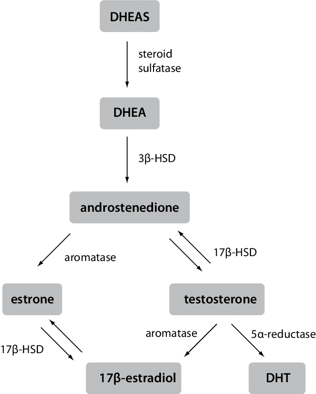
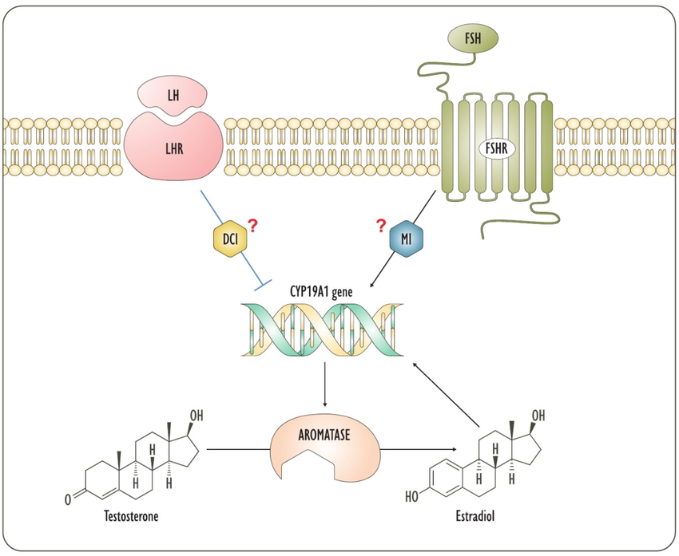
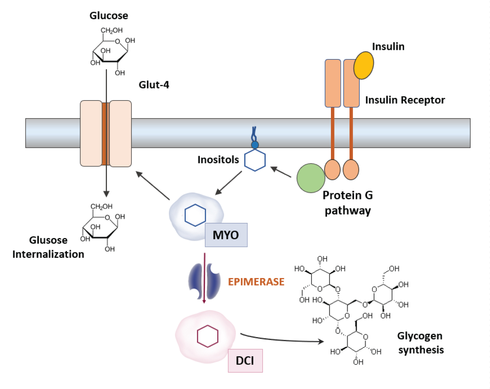

What if you could overclock your natural androgen production with a novel 4-supplement protocol?
This article explains how a four-supplement protocol raises total testosterone and T/E2 ratio, probably raises free testosterone and DHT, and improves insulin signaling. First, it covers how adiposity and metabolic dysfunction hurt androgenicity. Next, it covers some preliminaries before diving into the protocol, followed by a mechanistic explanation. Finally, it concludes with bloodwork and adjustments.
Adipose Tissue as an Endocrine Organ: The Androgen Death Spiral
White adipose tissue is a metabolically active endocrine organ. It expresses the aromatase enzyme, which converts androgens into estrogens [Kershaw & Flier, 2004]. In men, increased adiposity elevates estradiol (E2). Elevated E2 promotes fat storage and suppresses Luteinizing Hormone (LH), which reduces testosterone production. Lower testosterone further reduces metabolic rate and muscle mass, tilting energy balance toward higher blood glucose and fat storage. Expanded adipose tissue secretes pro-inflammatory cytokines (TNF-α, IL-6) that directly impair insulin receptor signaling [Kershaw & Flier, 2004], resulting in decreased insulin sensitivity and — you guessed it — more fat. The result is the soft, low-T physique nobody wants.
Breaking this cycle requires intervention at multiple levels, including the enzymatic level. First, you must be exercising consistently and frequently — both high intensity (weights, sprinting) and low (brisk walking, cycling).
Operational Guardrails
Vitamin D3: Maintain serum levels between 50 and 80 ng/mL. Megadosing (>10,000 IU) activates the RANKL pathway, causing bone resorption (weakens bones) and arterial calcification [Price, 2001] [Demer & Tintut, 2008].
Vitamin K2 (MK-4): Milligram doses direct calcium into the bone matrix. Megadosing is safe; doses of 45 mg/day significantly reduce undercarboxylated osteocalcin [Giri, 2020]. High menaquinone intake is associated with reduced coronary calcification [Beulens, 2009].
Magnesium: Required for D3 metabolism. Use glycinate, l-threonate, or lysinate glycinate. Avoid oxide. Excess intake disrupts electrolyte balance, which is linked to cognitive decline.
NAD+ Precursors (NMN/NR): NAD+ is a cofactor for epimerase, the enzyme that irreversibly converts MI to DCI. Exercise raises NAD+ levels — more effectively than NMN/NR supplementation alone. Stacking NAD+ precursors on top of consistent training, in someone already insulin-sensitive, while supplementing exogenous DCI, triple-charges epimerase drive. The risk: E2 crashing well below 20 pg/mL — joint pain, bone density loss, mood instability, and paradoxically, libido death. If running NAD+ precursors, consider reducing DCI to 250 mg and monitoring E2 at 2-week intervals until stable.
Protocol Overview
These are starting-point doses. Individual variance across age, adiposity, baseline insulin sensitivity, and NAD+ status will affect response. Some individuals may need substantially different amounts. Adjust based on labs.
Protocol Breakdown
In bodybuilding and high-level biohacking, 100 mg DHEA is considered as a starting point. But this dose significantly elevates substrate availability for both androgen and estrogen synthesis. Studies show 100 mg DHEA in older adults restores DHEA levels to young adult ranges and elevates androgens. The problem is that it raises estrogen [Morales, 1998].
What if we could tell the body to raise testosterone but not estrogen…
What is DCI?
D-Chiro-Inositol (DCI) is a specific form of inositol found in small amounts in foods like buckwheat and carob. It acts as a secondary messenger for the insulin receptor inside cells.
DCI is commonly used by women suffering from PCOS in a 1:20 ratio with myoinositol (MI). DCI essentially helps reduce the insulin-mediated testosterone production that contributes to the problem.
A women's PCOS supplement that lowers testosterone in women — what's that got to do with lowering your estrogen? In men, DCI has a mirrored effect: improving insulin response and increasing testosterone. More on that further along.
DCI and Insulin Signaling
Insulin is a "first messenger" arriving at the cell's receptor. For the cell to do anything with that signal, it needs a secondary messenger inside the cell to carry out the orders. DCI is that messenger. Without enough DCI, the cell becomes "deaf" to insulin, leading to insulin resistance and fat storage.
The Metabolic Loop
The body uses an enzyme called epimerase to flip the structure of Myo-inositol into D-chiro-inositol. Many men have a "broken switch" where this conversion doesn't happen efficiently. This creates another negative feedback loop: decreased insulin sensitivity leads to decreased DCI, which worsens insulin resistance. Direct supplementation forces a break in this loop by providing the cell with more DCI.
In men, DCI performs a secondary, non-metabolic role that is central to this "Overclocking" protocol. It down-regulates mRNA expression of the CYP19A1 gene, which codes for aromatase, the enzyme responsible for converting androgens (Testosterone/DHEA) into estrogens (Estradiol). In short, it blunts the production of aromatase, meaning less testosterone gets converted to estrogens.
DCI deficiency can result in prolonged, elevated glucose, leading to elevated insulin (to dispose of it). Worse, the elevated insulin can up-regulate aromatase activity leading to… more fat, less testosterone. Restoring DCI levels improves insulin sensitivity, which naturally lowers aromatase signaling.
DCI — Androgen Partitioning Effects
But more relevant to men: DCI directly reduces the expression of the aromatase enzyme at the genetic level. This creates a "partition" that prevents DHEA and pregnenolone from conversion into Estrogen, keeping the T:E ratio optimized.
The DHT Edge
Some of the body's free testosterone gets converted to dihydrotestosterone (DHT) via 5α-reductase. When total testosterone increases and estrogen conversion is blocked, more substrate becomes available for this conversion — provided that free T actually rises (see SHBG: Competing Pathways). DHT is 5-alpha reduced; the conversion is one-way and irreversible. It is the "terminal" androgen for performance. The effect is androgen-partitioning by narrowing the exit to estrogen.
DHT gets a bad rap, but it provides a huge performance edge (however or with whomever you may be performing). To put its effects in context, Proviron, a legendary oral androgen used for hypogonadism known for its "hardening" effects, is a synthetic DHT derivative.
DHT is a far more potent androgen than its parent testosterone, binding to the androgen receptor 3 to 5 times higher than Testosterone, with a dissociation rate 5 times slower. Unlike testosterone, DHT is non-aromatizable. Not only is DHT resistant to estrogen conversion, it cannot be directly converted back to testosterone. If that weren't good enough, DHT helps suppress aromatase activity further. Even better, DHT has very little effect on suppressing natural testosterone production.
The medical establishment has long maintained that DHT drives prostate cancer. The Saturation Model challenges this: androgen receptors in prostate tissue have finite binding capacity, and above a saturation point (~250 ng/dL serum T), additional androgens — including DHT — produce no further prostatic stimulation [Morgentaler & Traish, 2009]. Data from the REDUCE trial confirmed that baseline serum testosterone and DHT levels were unrelated to prostate cancer detection or grade [Muller, 2012].
SHBG Suppression
Sex Hormone Binding Globulin (SHBG) binds testosterone in the bloodstream. In men, approximately 40–44% of total testosterone is tightly bound to SHBG, rendering it biologically inactive, while ~50% is weakly bound to albumin (bioavailable), and only 1–2% circulates free [Goldman, 2017] [Brand, 2010]. SHBG binds DHT with even higher affinity than testosterone — so it acts as a brake on the two most potent androgens simultaneously. SHBG increases with age [Spritzer, 2025], compounding the decline in free testosterone.
This protocol creates competing pressures on SHBG. The net direction depends on the individual's metabolic starting point — which is why SHBG monitoring is non-negotiable. (Full breakdown in the Mechanism of Action section.)
The Nordio pilot study used 1200 mg DCI [Nordio, 2021] alone — without exogenous DHEA substrate — in 10 hypogonadal men (mean age 69.3 ± 3.6 years). After 30 days, DCI significantly rebalanced their hormonal profile: testosterone and androstenedione increased, oestradiol and oestrone decreased, and the T/E2 ratio improved.
| Marker | Baseline | T1 (30 Days) | Significance (p) |
|---|---|---|---|
| HOMA-IR (Insulin Sensitivity) | 5.41 ± 1.71 | 3.52 ± 1.02 | 0.001 |
| Androstenedione (Precursor) | 0.43 ± 0.12 | 0.88 ± 0.23 | 0.002 |
| Testosterone (ng/dL) | 222.80 ± 5.59 | 262.80 ± 32.11 | 0.009 |
| Oestrone (Estrogen) | 128.59 ± 5.60 | 93.59 ± 13.67 | 0.001 |
| Oestradiol (Estrogen) | 42.24 ± 4.32 | 34.15 ± 5.36 | 0.018 |
| T/E2 Ratio | 5.31 ± 1.11 | 7.83 ± 2.04 | 0.019 |
| Strength Test (Kg) | 24.98 ± 1.74 | 27.10 ± 2.07 | 0.004 |
| IIEF (Erectile Function) | 11.50 ± 1.96 | 13.60 ± 1.96 | 0.001 |
Adding 100 mg DHEA significantly increases estradiol substrate load. The 500 mg DCI dose is more conservative than the 1200 mg used in the pilot, but may provide sufficient aromatase inhibition when combined with exogenous androgen substrate. This balances efficacy with MI transport competition concerns.
Is the MI:DCI Ratio Appropriate?
2400 mg MI to 500 mg DCI creates a 5:1 ratio. The physiological ratio is 40:1. This altered ratio is experimental. DCI and MI share transport mechanisms (SMIT and HMIT), creating competitive inhibition risk. Potential mitigation strategies: increase MI to 4000 mg daily to approach a more physiological ratio (8:1), pulse DCI at 500 mg every other day or reduce to 250 mg daily, or time-separate doses (though systemic competition persists). The current ratio prioritizes aromatase inhibition. Close monitoring via labs is essential.
500 mg of DCI creates the 'Aromatase Shield' threshold and 2.5 g of MI drives Glut4 metabolic partitioning. This 5:1 ratio is a deliberate departure from the body's natural 40:1 balance, designed to prioritize androgenic signaling over estrogenic conversion.
Using 500 mg DCI as an aromatase inhibitor in men, stacked with DHEA and pregnenolone for upstream precursor loading, is virtually unheard of. The addition of MI for FSH support and insulin sensitization creates a multi-targeted endocrine intervention. This is unexplored territory in male hormone optimization — if you're aware of similar work, share it.
Mechanism of Action
1. Enzymatic Shielding via Aromatase Modulation
DHEA at 100 mg provides approximately 4–5 times the daily physiological production of a healthy male. While DHEA serves as a direct precursor to testosterone, it also converts to estradiol via the aromatase enzyme — this is the fundamental problem with standalone DHEA supplementation [Labrie, 2001] [Morales, 1998].

DCI is used as a transcriptional down-regulator of aromatase. DCI reduces the mRNA expression of aromatase, acting as a functional brake on the enzyme within adipose and peripheral tissues [Monastra, 2021]. By placing DCI at 500 mg alongside DHEA in the morning, the enzymatic environment favors testosterone over estradiol by the time DHEA metabolizes in the liver.
2. Upstream Precursor Support
Pregnenolone at 30 mg maintains the neurosteroid and mineralocorticoid reservoir. This prevents "precursor steal", where high DHEA demand depletes the raw materials required for cortisol and progesterone synthesis. The 30 mg dose positions this as a neurosteroid intervention rather than a direct hormonal manipulation.
3. Testicular Signaling and Inositol Transport Competition
Myo-inositol is required for FSH receptor signaling and mitochondrial function within the testes, for spermatogenesis [Stringaro, 2023]. DCI and MI compete for the same SMIT1/2 transporters. The physiological ratio is 40:1 (MI to DCI); this protocol uses approximately 5:1. This altered ratio prioritizes aromatase inhibition while providing sufficient MI in the evening to maintain spermatogenesis. The ratio creates a tradeoff: maximizing DCI's aromatase suppression may competitively inhibit MI uptake in some tissues. This is unexplored territory in male hormone optimization.

4. Insulin Sensitization and Post-Workout Timing
Both DCI and MI improve insulin signaling [Monastra, 2021] [Nestler, 1999]. Post-workout timing of 1000 mg MI capitalizes on elevated insulin sensitivity following exercise. This maximizes glucose shuttling for glycogen resynthesis, creating an anabolic environment that complements elevated androgen levels. Insulin also enhances the Na+/K+ pump, improving creatine transport into cells.

Here's what the diagram shows at a high level: insulin arrives at the cell and needs a relay system inside to carry out its orders. MI and DCI are that relay system — they're the "second messengers" that translate the insulin signal into action.
More specifically: when insulin binds to its receptor on a muscle cell, MI causes glucose transport proteins (GLUT4) to move to the cell surface, opening the door for glucose to enter. Epimerase then irreversibly converts some of that MI into DCI, which drives storage of that glucose as glycogen rather than letting it circulate or convert to fat.
Dosing 1000 mg MI post-workout exploits a window where insulin sensitivity is already elevated from exercise. More glucose enters the cell, more glycogen gets stored, and the anabolic environment created by elevated androgens is reinforced. Insulin also improves the pump that moves creatine into muscle cells, so post-workout timing benefits creatine storage as well.
5. SHBG Suppression: Competing Pathways
When total testosterone results don't match symptoms, clinicians order SHBG. Free T is then calculated from total T, SHBG, and albumin (usually via the Vermeulen equation) — not measured directly. SHBG also serves as a proxy for hepatic insulin sensitivity. This protocol creates two opposing forces on SHBG:
Pathway A (upward pressure): High insulin suppresses hepatic SHBG production. By improving insulin sensitivity (lowering fasting insulin), DCI removes that suppressive signal — which should cause SHBG to rise [Brand, 2010].
Pathway B (downward pressure): DCI has a direct signaling effect on the liver that can downregulate SHBG [Nestler, 1999]. Furthermore, elevated androgens naturally suppress SHBG [Morales, 1998].
While the Monastra (1g/day) and Nordio (1.2g/day) studies confirm that DCI shifts the hormonal balance toward androgens, they leave a critical data gap regarding what actually reaches the tissue. By failing to measure SHBG, free testosterone, or DHT, these pilot trials ignore the bioavailable reality of the intervention — both over time and in the immediacy.
The net direction of SHBG likely depends on the individual's metabolic starting point. In insulin-resistant older men, the metabolic lift from improved insulin sensitivity might dominate, potentially "handcuffing" the new testosterone to SHBG before it reaches tissue. In metabolically optimized athletes, however, the androgenic surge likely wins, potentially driving free T significantly higher than total T levels suggest. Without direct measurement, we are only seeing the "gross income" (total T), not the "net spendable" (free T).
DCI consistently decreases estradiol and increases total testosterone in men, shifting the balance in favor of androgens. To what degree it affects free testosterone and DHT remains unmeasured. Until SHBG and DHT are tracked alongside DCI supplementation, how much of the androgenic shift reaches tissue remains unknown.
Recommended Lab Testing
Baseline and 4–6 Week Follow-up:
Estradiol (Sensitive Assay): Primary success metric for DCI efficacy. If E2 remains >35 pg/mL despite 500 mg DCI, either the dose is insufficient or DHEA is too high.
SHBG: DCI creates competing pressures on SHBG (see Mechanism of Action). Track this to determine whether total T gains are translating to bioavailable hormones.
Total and Free Testosterone: Verify androgen elevation and assess free T proportion.
Fasting Insulin and HOMA-IR: Track metabolic impact. Both inositol isomers affect insulin signaling; verify the altered ratio is improving rather than hindering metabolic health.
Liver Enzymes (AST, ALT): DHEA is hepatically metabolized. Monitor for any elevation.
Semen Analysis (Optional): If fertility or spermatogenesis is a goal, this is the definitive way to assess whether 500 mg DCI is crowding out MI in the testes.
Adjusting Doses
Low E2 (<20 pg/mL) + Joint Pain: Reduce DCI to 250 mg or increase DHEA to 125 mg.
High E2 (>35 pg/mL): Increase DCI to 750 mg or reduce DHEA to 75 mg.
Low FSH/Libido: Increase MI to 4 g/day to improve the MI:DCI ratio.
Elevated SHBG (eating your androgen gains): Zinc, boron, magnesium, vitamin D, and stinging nettle root are the most well-supported supplements for lowering SHBG. If labs show SHBG rising despite total T gains, these can help tilt the balance toward bioavailable hormones. Boron (6–12 mg/day) has the most direct evidence for SHBG reduction in men.
References
[Kershaw & Flier, 2004] Adipose tissue as an endocrine organ, Kershaw, E. E., & Flier, J. S. The Journal of Clinical Endocrinology & Metabolism, 89(6), 2548–2556.
[Price, 2001] Osteoprotegerin inhibits artery calcification induced by warfarin and by vitamin D, Price, P. A., June, H. H., Buckley, J. R., & Williamson, M. K. Arteriosclerosis, Thrombosis, and Vascular Biology, 21(10), 1610–1616.
[Demer & Tintut, 2008] RANKL increases vascular smooth muscle cell calcification through a RANK-BMP4-dependent pathway, Demer, L. L., & Tintut, Y. Circulation Research, 104(9), 1041–1048.
[Giri, 2020] Maximal dose-response of vitamin-K2 (menaquinone-4) on undercarboxylated osteocalcin in women with osteoporosis, Giri, T. K., et al. International Journal for Vitamin and Nutrition Research, 90(1–2), 42–48.
[Beulens, 2009] High dietary menaquinone intake is associated with reduced coronary calcification, Beulens, J. W. J., et al. Atherosclerosis, 203(2), 489–493.
[Morales, 1998] The effect of six months treatment with a 100 mg daily dose of dehydroepiandrosterone (DHEA) on circulating sex steroids, body composition and muscle strength in age-advanced men and women, Morales, A. J., et al. Clinical Endocrinology, 49(4), 421–432.
[Morgentaler & Traish, 2009] Shifting the paradigm of testosterone and prostate cancer: the Saturation Model and the limits of androgen-dependent growth, Morgentaler, A., & Traish, A. M. European Urology, 55(2), 310–320.
[Muller, 2012] Serum testosterone and dihydrotestosterone and prostate cancer risk in the placebo arm of the Reduction by Dutasteride of Prostate Cancer Events trial, Muller, R. L., et al. European Urology, 62(5), 757–764.
[Goldman, 2017] A Reappraisal of Testosterone's Binding in Circulation: Physiological and Clinical Implications, Goldman, A. L., et al. Endocrine Reviews, 38(4), 302–324.
[Brand, 2010] Association of Testosterone and Sex Hormone–Binding Globulin With Metabolic Syndrome and Insulin Resistance in Men, Brand, J. S., et al. Diabetes Care, 34(7), 1579–1584.
[Spritzer, 2025] Association of age and insulin resistance with sex hormone-binding globulin levels in healthy men, Spritzer, P. M., et al. Scientific Reports.
[Nordio, 2021] d-Chiro-Inositol improves testosterone levels in older hypogonadal men with low-normal testosterone: a pilot study, Nordio, M., et al. Basic and Clinical Andrology, 31, 28.
[Labrie, 2001] DHEA and its transformation into androgens and estrogens in peripheral target tissues: intracrinology, Labrie, F., et al. Frontiers in Neuroendocrinology, 22(3), 185–212.
[Monastra, 2021] D-chiro-inositol, an aromatase down-modulator, increases androgens and reduces estrogens in male volunteers: A pilot study, Monastra, G., et al. European Review for Medical and Pharmacological Sciences, 25(11), 3860–3868.
[Stringaro, 2023] A Clinical Guide to Inositols, Stringaro, A., Nordio, M., & Vazquez-Levin, M. Academic Press, 2023, pp. 197–211.
[Nestler, 1999] Ovulatory and metabolic effects of D-chiro-inositol in the polycystic ovary syndrome, Nestler, J. E., et al. New England Journal of Medicine, 340(17), 1314–1320.
[Iranzo-Sola, 2023] Can a Specific 3.6:1 Myoinositol (1100 mg) to D-chiro-inositol (300 mg) Ratio-Based Food Supplement Increase Pregnancy Rates in Advanced Age Conception? A Series of Case Reports, Iranzo-Sola, et al. Obstetrics and Gynaecology Cases — Reviews.